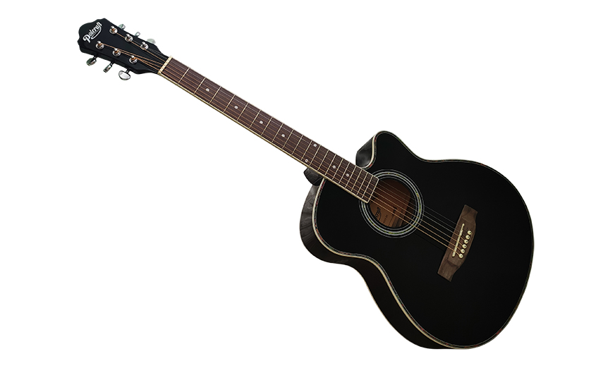
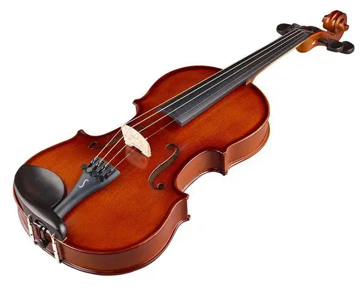
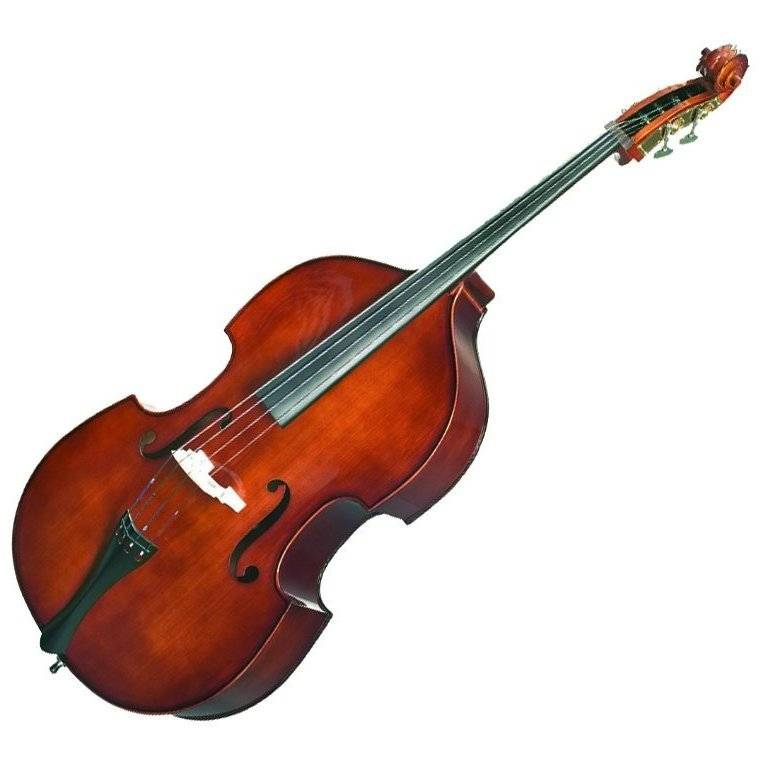
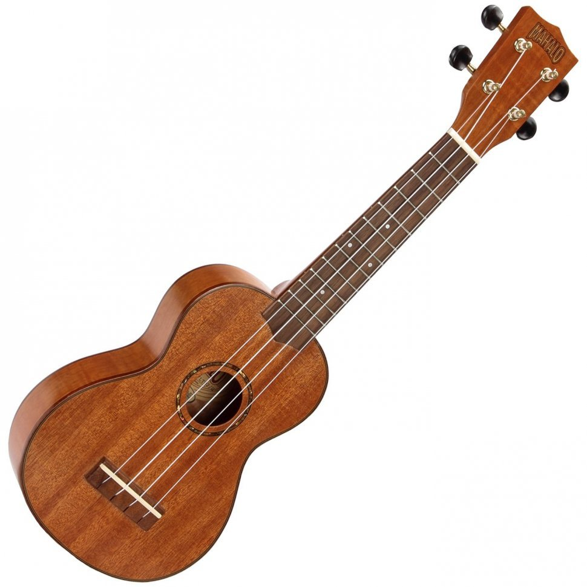

Гітара — струнний щипковий інструмент із резонатором, широко використовується в рок-,
поп-, блюз- та фолк-музиці. Має різні варіації — акустичну, електричну та класичну.

Гітара
Скрипка — чотириструнний смичковий інструмент з високим звучанням, активно використовується в класичній, народній та кіномузиці. Вимагає високої технічності та чуття інтонації.

Скрипка
Контрабас — найбільший і найнижчий за звучанням смичковий інструмент, ключовий у симфонічних оркестрах, джазі та фольклорі. Грають смичком або щипком.

Контрабас
Укулеле — компактний чотириструнний інструмент з теплим, дзвінким звучанням. Походить з Гаваїв, популярний у поп-музиці та навчанні дітей.
